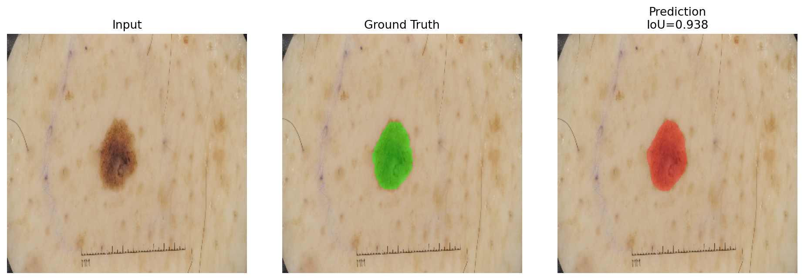
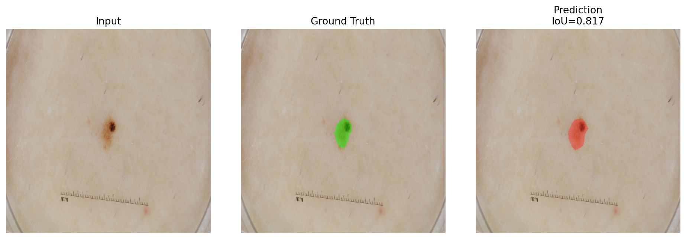
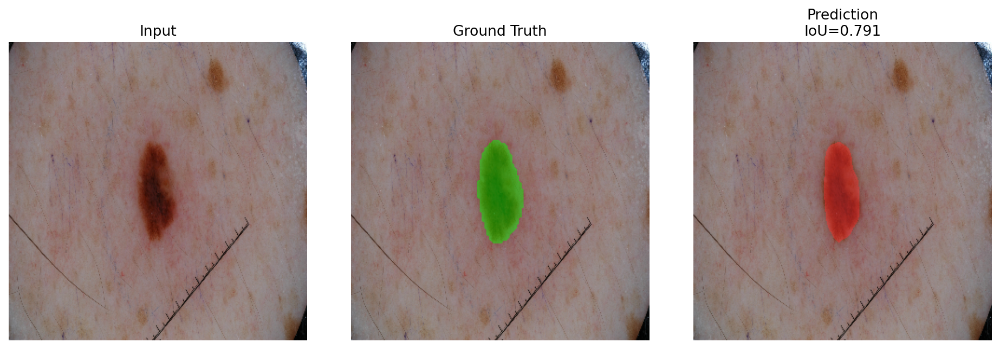
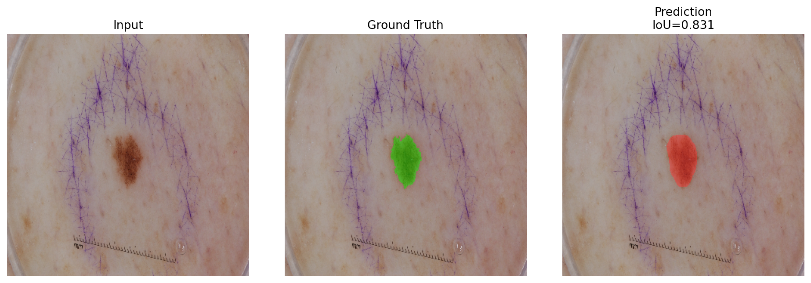

Project Focus
DermaSeg is designed to show a serious medical imaging workflow rather than a single isolated notebook result. The current project uses the official ISIC 2018 Task 1 lesion-boundary split and compares supervised segmentation methods across different architectural families.
What the project demonstrates
Real mask-supervised medical segmentation on a public benchmark dataset, reproducible train/validation/test runs, and a codebase that supports classic U-Net variants, non-U-Net CNN baselines, transformer models, and promptable foundation-model extensions.
Why ISIC 2018
ISIC is a clean fit for this repository because it is a 2D RGB medical segmentation task with official lesion masks, making it appropriate for DeepLabV3, U-Net-family models, and transformer-based image segmentation.
Current Result
The first completed project result is a pretrained DeepLabV3 run using the official ISIC train, validation, and test folders. The numbers below come from a local run on this repository and are tracked in versioned result artifacts.
| Model | Best Val Dice | Best Val IoU | Best Val TJ | Test Dice | Test IoU | Test TJ |
|---|---|---|---|---|---|---|
| DeepLabV3 | 0.8900 | 0.8134 | 0.7598 | 0.8782 | 0.7991 | 0.7320 |
Validation checkpoint selection uses threshold Jaccard for the ISIC task. This is a local project run, not a copied leaderboard submission.
DeepLabV3 Architecture
DeepLabV3 is the current strongest completed run in the repository. It was chosen as a serious non-U-Net baseline for RGB medical segmentation rather than as a claim of reproducing the original ISIC challenge winners.
Input Image
A `320 x 320` RGB dermoscopic image enters the network as a 3-channel lesion-segmentation sample.
ResNet-50 Backbone
A pretrained ResNet-50 extracts increasingly abstract spatial features. This gives the model strong visual priors before any ISIC fine-tuning begins.
Atrous Feature Encoding
DeepLabV3 uses dilated convolutions so the receptive field expands without aggressively destroying feature-map resolution.
ASPP Context Module
The Atrous Spatial Pyramid Pooling block gathers lesion context at multiple scales, which helps with large, small, smooth, and irregular lesion boundaries.
2-Class Segmentation Head
The project predicts `background` vs `lesion` logits, then trains them with combined cross-entropy and Dice loss.
Mask Prediction
The best checkpoint is selected by validation threshold Jaccard, then evaluated on the held-out ISIC test set.
Why this model worked here
ISIC is a 2D RGB dataset, so DeepLabV3 matches the data shape naturally. The pretrained backbone helps transfer low-level texture and boundary cues, while ASPP helps the network reason about lesion scale and contour structure.
Why it matters in the repo
The project is not limited to U-Net variants. DeepLabV3 provides a defensible non-U-Net CNN baseline, which makes the repository stronger as a segmentation portfolio project.
Qualitative Results
These panels come from the saved DeepLabV3 checkpoint on the ISIC test split. Each image shows input, ground-truth mask overlay, and predicted mask overlay for direct visual inspection.




Model Coverage
DeepLabV3 is the first completed run, but the repository is structured for broader segmentation experiments.
Supervised models in the project
- U-Net
- Attention U-Net
- SegNet
- U-Net++
- DeepLabV3
- SwinUNetLite
- SegFormerLite
Foundation-model extensions
- SAM
- MedSAM
- Promptable evaluation script support
- Qualitative and metric summaries tracked in-repo